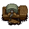
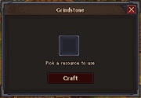

Grindstone
| Grindstone | |
|---|---|
 | |
Basic information
| |
Location(s)
| |
| Workyard, The Village |

Uses a Whetstone to repair axes, pickaxes and shovels. There are currently only two grindstones on the map, located at the Workyard and the Blacksmith's house (located in The Village). It cannot be built.
In the UI for the grindstone, you are given the option to place a single tool, and then a whetstone.


| ||||||||